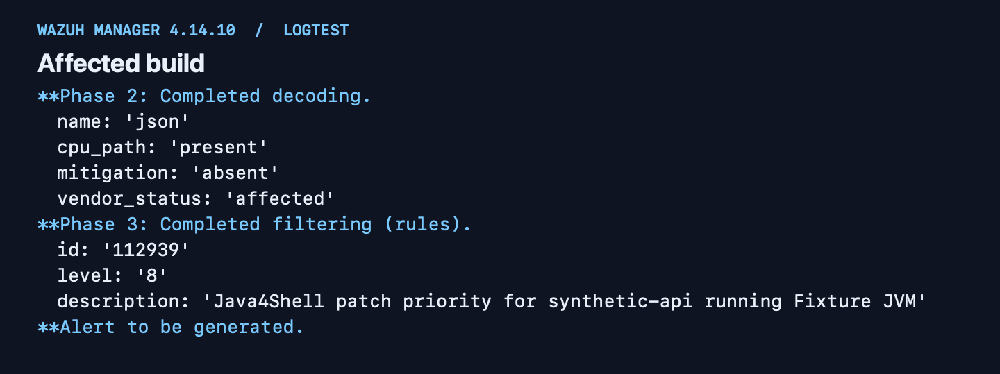
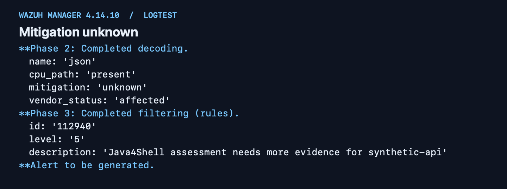
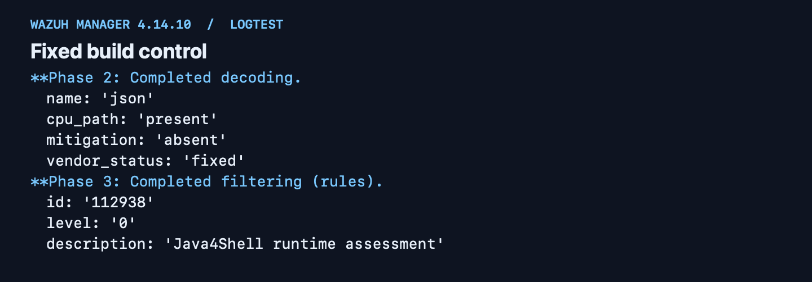

Finding Java4Shell patch priorities with Wazuh
Prioritize CVE-2026-114938 remediation from running JVM inventory and reproduce nine Wazuh Logtest cases.
The Java version in a package inventory and the Java version serving traffic can diverge. After an update, an old JVM may keep running until the service restarts. A container can also bring its own Java build. For Java4Shell, CVE-2026-114938, I built a Wazuh integration around the runtime serving the workload.
Java4Shell is a memory corruption flaw affecting a hardware-accelerated Base64 decoding path in OpenJDK. Red Hat describes the combination of an affected build, x86-64 with AVX-512 VBMI, and an application that decodes attacker-controlled input. Oracle's patch advisory gives product-specific affected builds, including an Oracle Java SE 8 performance build. I use the deployed vendor's advisory for each exact build because feature-version checks can miss exceptions and backports. Red Hat bulletin · Oracle patch advisory
Three observations per workload
I record the exact build of the running JVM and its vendor verdict, the CPU features visible in the workload environment, and whether the live process has an effective workaround. On a HotSpot JVM that permits attach, an operator can inspect the process with jcmd PID VM.version and jcmd PID VM.flags -all. Red Hat documents disabling Base64 intrinsics as a temporary workaround on applicable builds and also describes disabling AVX-512 on x86-64. Check vendor guidance before changing JVM flags. Red Hat bulletin
A small Python tool packages the observations into a JSON line for Wazuh's built-in decoder. Rule 112939 raises a level-8 alert when the vendor says the build is affected, the CPU prerequisites are present, and the workaround is absent. Rule 112940 raises a level-5 alert when the record lacks evidence and has no verified exclusion. Fixed builds, workloads without the required CPU path, and workloads with a verified workaround stay quiet in the replay. This lets the analyst route a patch task and an inventory follow-up to the right owners.
From alert to action
Start with affected services that process untrusted input. Patch through the runtime vendor, rebuild container images where appropriate, and roll out the fixed runtime. Run the assessment again after restart and confirm the running build. Keep that evidence in inventory because the Wazuh alert history will still show the earlier observation.
The alerts describe exposure prerequisites. App-specific reachability and incident evidence require their own investigation. If a JVM missed the inventory pass, the absence of an alert gives no information about its status. A reliable collection process matters as much as the rule.
What the Wazuh manager reported
All nine synthetic cases passed on the Wazuh 4.14.10 manager image (internal revision rc2). Five controls stayed silent. I reran three representative cases on a disposable manager and captured the decoder and rule output below. The images show excerpts from wazuh-logtest. Live agent ingestion and production runtime inventory remain unverified.



Full manager transcript for the three captures · Results for all nine replay cases